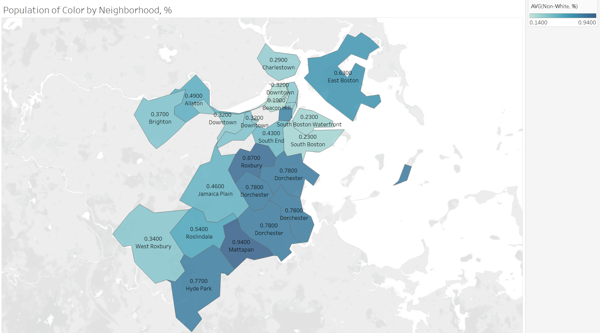

A2: Exploratory Visual Analysis: Corporate Landlords & Evictions
This project integrates Boston property and census data with court eviction filings to visually explore how corporate ownership correlates with housing instability across neighborhoods. By examining spatial and demographic trends, it reveals nuanced patterns in local eviction dynamics driven by institutional landlord practices.